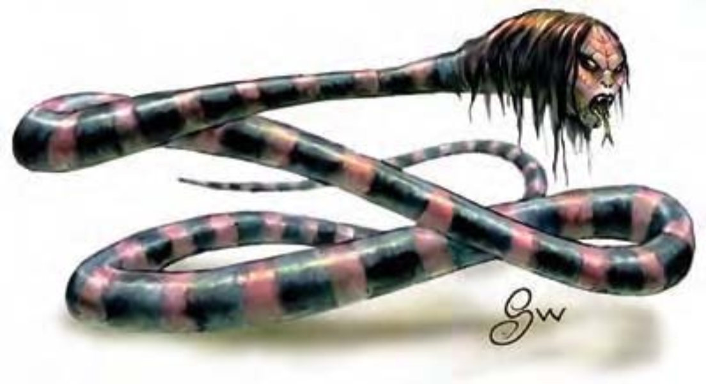

这种令人作呕的巨蛇身体有着一圈圈的黑色环纹，间隔闪烁着绯红色的光泽。头部轮廓与人类近似，有一头丝状的毛发。他周遭空气中弥漫着持久不散的腐臭。
幽魂纳迦名称的由来是因为他们通常栖息在废墟或荒凉之处。他们邪恶透顶，随时随地想伤人。
幽魂纳迦通晓深渊语与通用语。
| 资料栏位 | 幽魂纳迦 (Spirit Naga) 大型异怪 |
| 生命骰 | 9d8+36 (76HP) |
| 先攻 | +1 |
| 速度 | 40英尺 (8格) |
| 防御等级 | 16 (-1体型、+1敏捷、+6天生)、接触10、措手不及15 |
| 基本攻击/擒抱 | +6 / +14 |
| 攻击 | 啮咬+9近战 (2d6+6附加毒素) |
| 全力攻击 | 啮咬+9近战 (2d6+6附加毒素) |
| 占据/触及 | 10英尺 / 5英尺 |
| 特殊攻击 | 魅惑凝视、毒素、法术 |
| 特殊能力 | 黑暗视觉60英尺 |
| 豁免 | 强韧+7、反射+6、意志+9 |
| 属性 | 力量18、敏捷13、体质18、智力12、感知17、魅力17 |
| 技能 | 专注+13、聆听+14、法术辨识+10、侦察+14 |
| 专长 | 专攻能力 (魅惑凝视)、警觉、战斗施法、免用材料施法B、快速反射 |
| 环境 | 温带沼泽 |
| 组织 | 单独或一巢 (2-4) |
| 宝藏 | 标准 |
| 阵营 | 通常混乱邪恶 |
| 进化 | 10-13HD (大型)；14-27HD (超大型) |
| 等级修正值 | ― |
幽魂纳迦会正面迎向敌人，好让凝视攻击能发挥最大效果。一旦对手转开目光，他们马上滑向前大力啮咬。
魅惑凝视 (超自然)：与“魅惑人类”法术相同，30英尺，通过意志检定 (DC=19) 则无效。豁免检定DC的调整值与魅力调整值相同。
毒素 (特异)：每次造成伤害后，幽魂纳迦就会注入毒素 (强韧检定的DC=16)。初始伤害与后续伤害都是1d8点体质伤害。豁免检定DC的调整值与体质调整值相同。
法术：幽魂纳迦施法时视同9级术士，但可以从牧师的法术列表中选取法术，并可选择下列领域法术：混乱、邪恶。这些牧师与领域法术视为秘法术，意即无须使用法器。
一般已知法术：(6/7/7/7/5；豁免检定DC=14+法术等级)
零级――“治疗小伤”、“晕眩术”、“侦测魔法”、“光亮术”、“法师帮手”、“开关术”、“冷冻射线”、“阅读魔法”；
一级――“魅惑人类”、“治疗轻伤”、“神眷”、“魔法飞弹”、“虔诚护盾”；
二级――“轻灵术”、“隐形”、“灼热射线”、“治疗中度伤”；
三级――“移位术”、“治疗重伤”、“解除魔法”、“闪电束”；
四级――“神能”、“高等隐形术”。